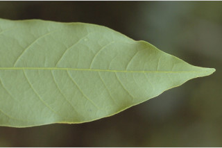
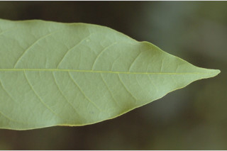
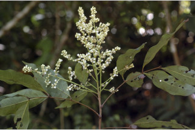
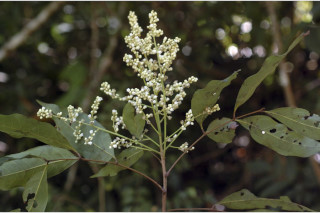
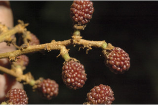
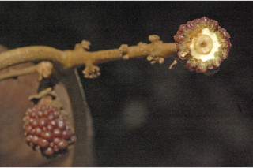
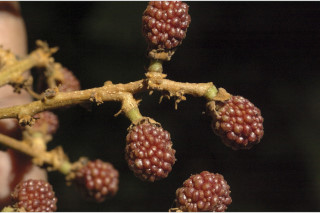
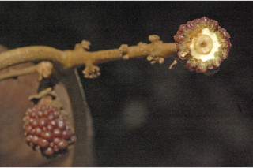

Tamil: Kattupuvam, Shempuvan Malayalam: Chempoovana, Chempunna, Malampoovathi, Malampuvanna, Mulei, Pasakotta, Poripuna Kannada: Kanakindeli English: English Kannada Malayalam Tamil Botanical descriptions Ecology Distribution Literature Botanical descriptions : Habit : Large buttressed trees up to 25 m tall. Trunk\bark : Bark brown, irregularly flaky when mature; inner bark cream. Branchlets : Young branchlets terete , lenticellate , minutely stellate hairy when young, later glabrous . Leaves : Leaves compound , usually imparipinnate , sometimes paripinnate , alternate , spiral , clustered at twig ends, 15-40 cm long; rachis terete , pulvinate ; petiolule stout, 0.5-0.8 cm long, canaliculate ; leaflets 4-8 (-10) pairs, alternate , 8-18.5 (-20.3) x 2.5-7 cm, lanceolate or narrow elliptic-oblong , apex gradually acuminate with blunt tip or subacute , sometimes obtuse , base rounded to acute , sometimes asymmetric , margin entire , coriaceous , glaucous beneath, glabrous ; midrib slightly raised above; secondary_nerves 10-20 pairs, nearly straight and curved near margin; tertiary_nerves reticulo-percurrent . Flowers : Inflorescence terminal and axillary , much branched panicles ; flowers sessile . Fruit& seed : Schizocarp , globose , tubercled , red, 1.5 cm across; seed one. Ecology : Canopy trees in evergreen forests up to 1400 m. Distribution : Indomalaysia; in the Western_Ghats- throughout. Literature : Lour., Fl. Cochinch. 233. 1790; Gamble, Fl. Madras 1: 252. 1997 (re. ed); Sasidharan, Biodiversity documentation for Kerala- Flowering Plants, part 6:107. 2004; Saldanha, Fl. Karnataka 2: 193. 1996; Cook, Fl. Bombay 1:267. 1903; Almeida, Fl. Maharashtra 1. Top of the Page
Nephelium longana (Lam.) Camp.


 

 



 


